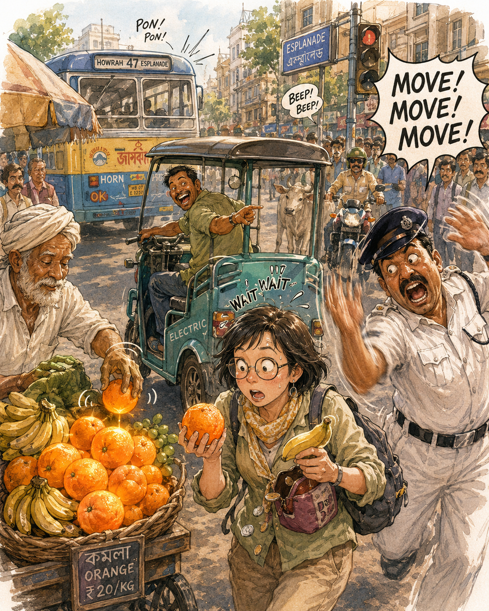

Real Story
The day the world became too funny to obey traffic rules.
At a traffic light in Kolkata, the electric three-wheeler had already started to move. The driver looked back and laughed. The traffic policeman waved like the whole road depended on his arms. The fruit seller remained calm, slowly placing fruit as if the universe had not entered panic mode.
Tuzi was in the middle of it all: holding fruit, finding coins, trying to understand whether to wait, pay, move, laugh, or survive the moment.
Why This Memory Stayed
Because the oranges became two tiny suns.
Twenty years later, the exact traffic light, plate number, and street timing may disappear. But the oranges remain. They are not just fruit. They are the proof that the day was real, ridiculous, bright, and impossible to forget.